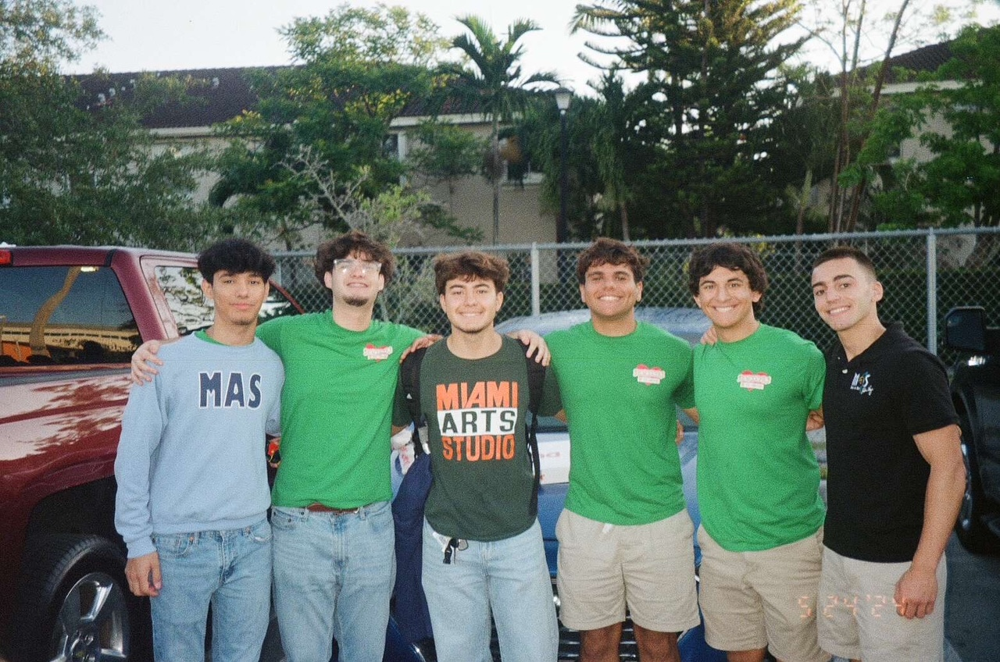
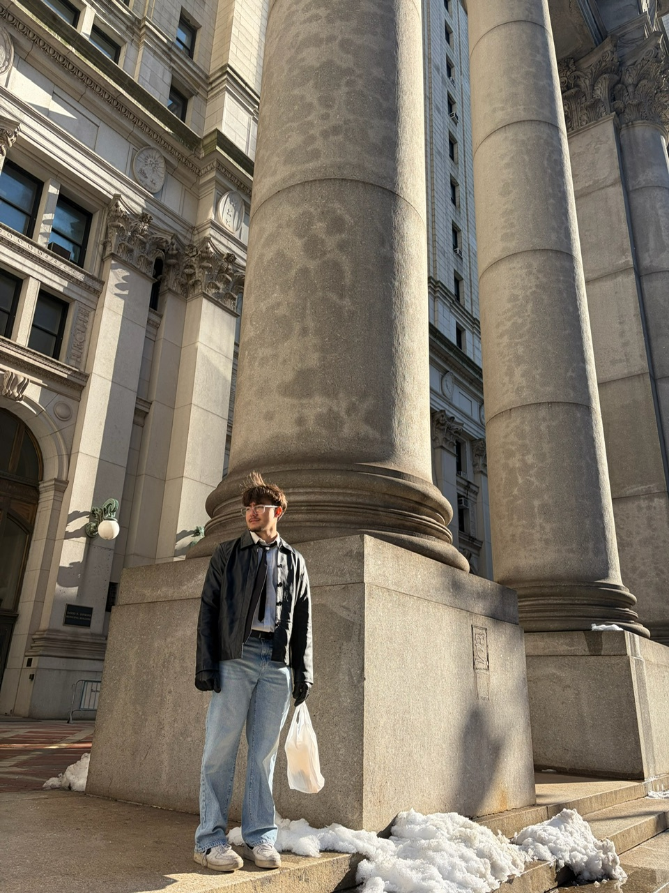
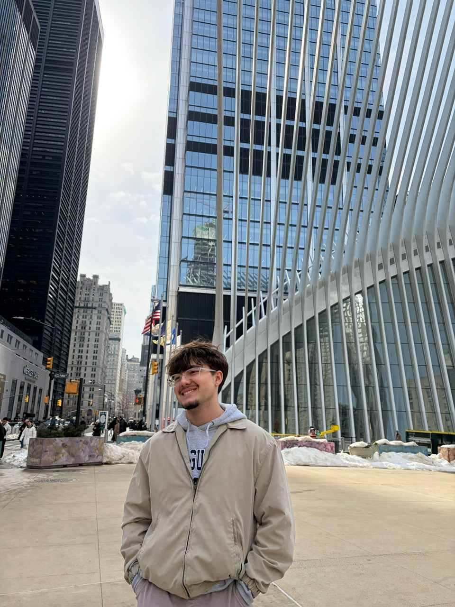
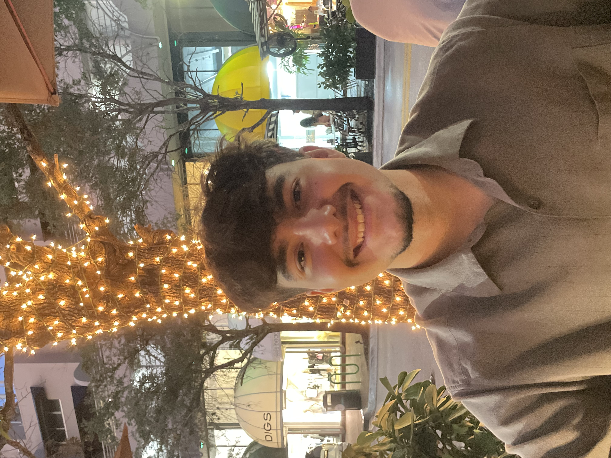
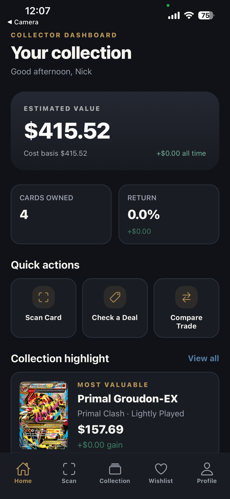
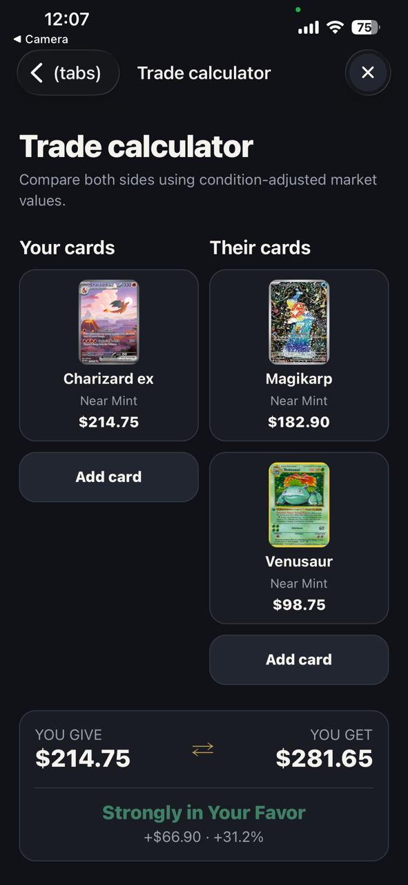
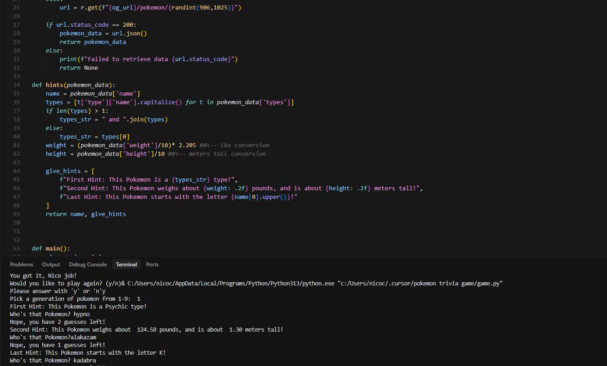
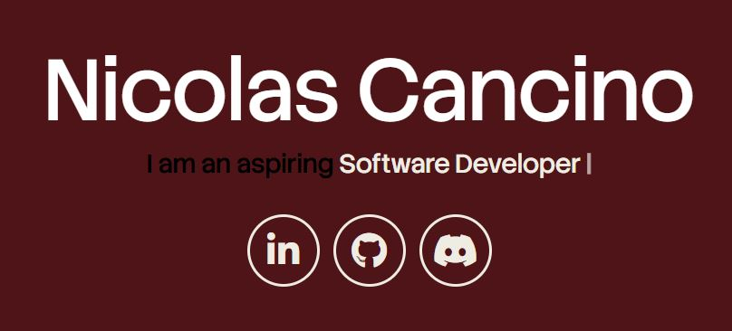

Community Schools Dashboard
A workspace for 18 district schools to manage events, service requests, and budgets across more than $10 million in grant funding.
Software developer · Miami, FL
I study computer science at FIU and build tools for schools, games, and collectors.




I’m pursuing a B.S. in Computer Science at Florida International University, with an expected graduation date of May 2028.
I currently build internal tools and data workflows for 18 district schools. Before that, I worked on esports platform features, player analytics, and live-match APIs.
Outside of coding, I’m into gaming, collecting, and spending time with friends.
Download my résumé ↓A workspace for 18 district schools to manage events, service requests, and budgets across more than $10 million in grant funding.


A mobile app for checking card prices, managing collections, and comparing trades. Includes card scanning, condition adjustments, and deal ratings.
An AI-assisted coaching tool for Valve’s Deadlock that turns match history and player stats into practical goals.

A guessing game using PokéAPI, with generation selection, progressive hints, and score tracking.

My first portfolio, built from scratch with responsive layouts and deployed on Vercel.